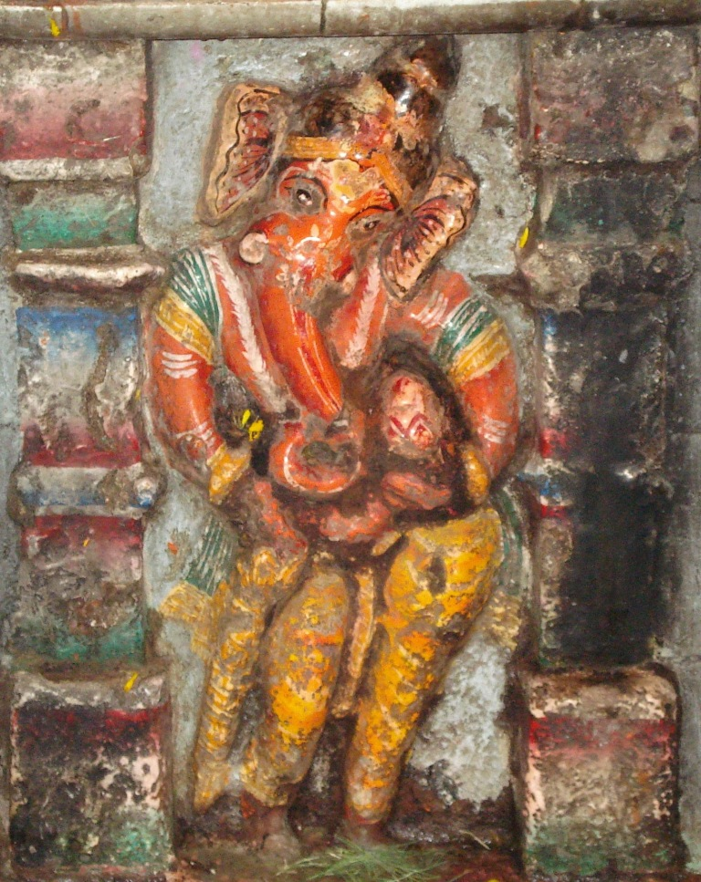

<?xml version="1.0" encoding="UTF-8"?><rss version="2.0"
	xmlns:content="http://purl.org/rss/1.0/modules/content/"
	xmlns:wfw="http://wellformedweb.org/CommentAPI/"
	xmlns:dc="http://purl.org/dc/elements/1.1/"
	xmlns:atom="http://www.w3.org/2005/Atom"
	xmlns:sy="http://purl.org/rss/1.0/modules/syndication/"
	xmlns:slash="http://purl.org/rss/1.0/modules/slash/"
	>

<channel>
	<title>Jyeshta Vinayak &#8211; Varanasi Temples</title>
	<atom:link href="index.html" rel="self" type="application/rss+xml" />
	<link>../../../../index.html</link>
	<description>Temples of Varanasi as referred to in Kashi Khand</description>
	<lastBuildDate>Thu, 19 Jun 2025 05:16:46 +0000</lastBuildDate>
	<language>en-US</language>
	<sy:updatePeriod>hourly</sy:updatePeriod>
	<sy:updateFrequency>1</sy:updateFrequency>
	<generator>https://wordpress.org/?v=4.6.29</generator>
	<item>
		<title>JYESHTA VINAYAK</title>
		<link>../../../../vinayak-temples/jyeshta-vinayak/index.html</link>
		<pubDate>Sat, 08 May 2010 02:48:41 +0000</pubDate>
		<dc:creator><![CDATA[admin]]></dc:creator>
				<category><![CDATA[Jyeshta Vinayak]]></category>
		<category><![CDATA[Vinayak Temples]]></category>
		<category><![CDATA[jyes]]></category>
		<category><![CDATA[jyeshta devi]]></category>
		<category><![CDATA[significance of jyashth month]]></category>

		<guid isPermaLink="false">../../../../p=156.html</guid>
		<description><![CDATA[Jyeshta Vinayak is located at K-62/144, Sapt Sagar Mohalla, in the premises of Jyeshteshwar Ling. The temple is approachable from a famous locality called Maidagin.  People can approach Maidagin by Auto or Cycle Rickshaw or even car.  From Maidagin it is advisable to walk on foot. According to Lord Shiva (Kashi Khand, Chapter 57) all [&#8230;]]]></description>
				<content:encoded><![CDATA[<p>Jyeshta Vinayak is located at K-62/144, Sapt Sagar Mohalla, in the premises of Jyeshteshwar Ling. The temple is approachable from a famous locality called Maidagin.  People can approach Maidagin by Auto or Cycle Rickshaw or even car.  From Maidagin it is advisable to walk on foot. According to Lord Shiva (Kashi Khand, Chapter 57) all the Vinayaks were his sons and the eldest one was Jyeshta Vinayak.    Special importance is attached to Jyeshta month, Chaturthi after Amavasya. Poojas performed on this day will yield excellent results.</p>
<p></p>
<p>&nbsp;</p>
<p style="text-align: center;"><strong>(JYESHTA VINAYAK)</strong></p>
<p><strong>TYPES OF POOJAS</strong></p>
<p>The temple is open for worship from 05.30 a.m. in the morning to 12.30 p.m. and from 05.00 p.m. to 8.30 p.m.  Aarties are held both in the morning and evening.  According to old timers, the temple timings are flexible and the poojari may be requested to open the temple as per the convenience.</p>
<p>&nbsp;</p>
<p><strong>Please watch our YouTube Video about Jyeshta Vinayak at following Link :</strong></p>
<p>&nbsp;</p>
<p><a href="https://www.youtube.com/watch?v=40af4qZMnqA&amp;t=55s">https://www.youtube.com/watch?v=40af4qZMnqA&amp;t=55s</a></p>
]]></content:encoded>
			</item>
	</channel>
</rss>
